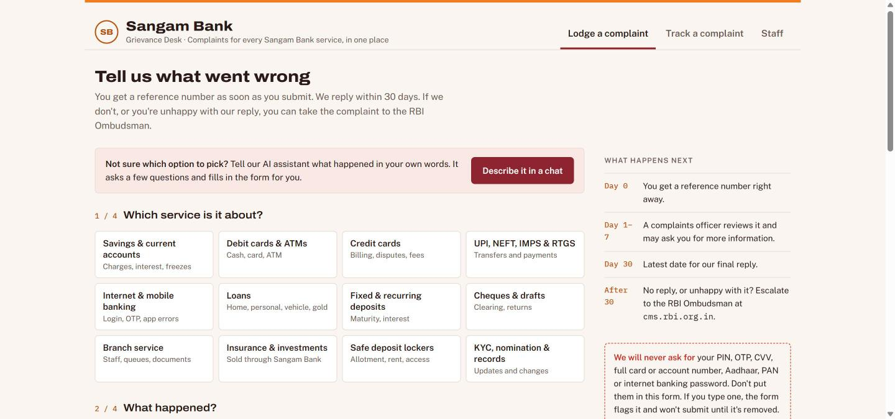
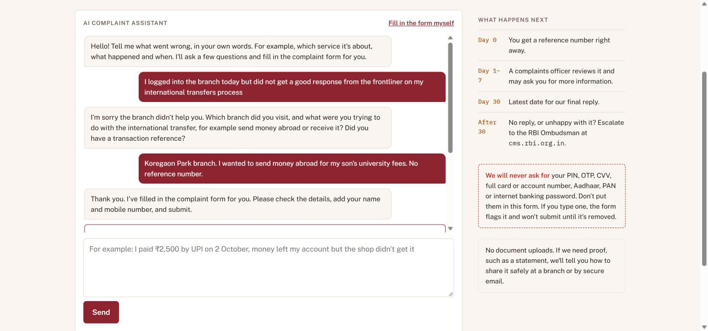
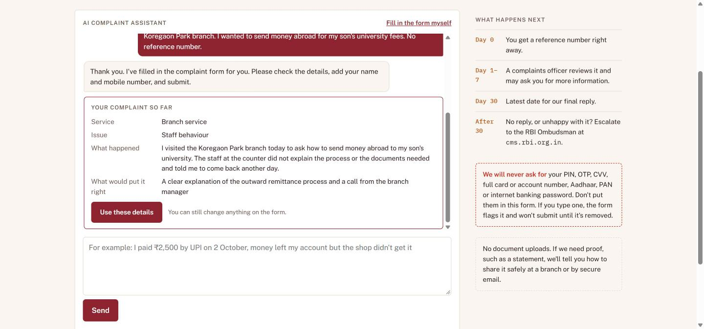
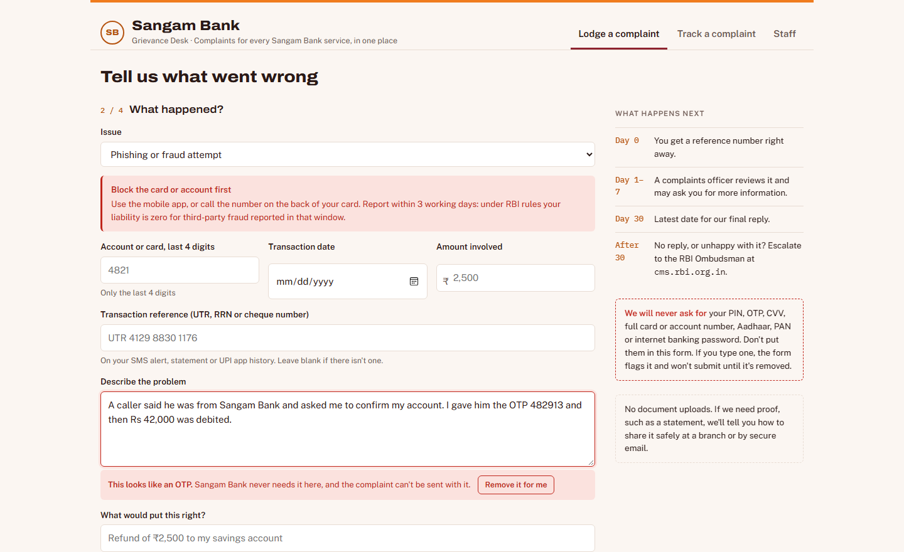
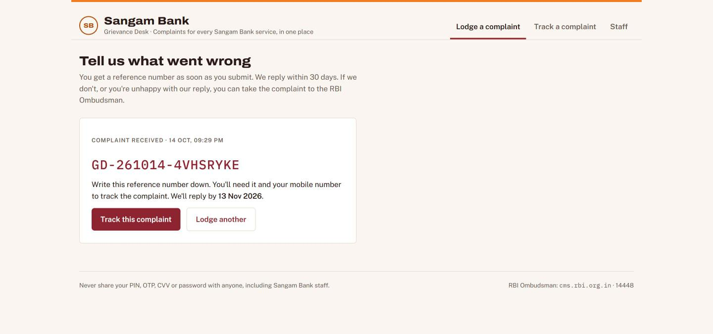
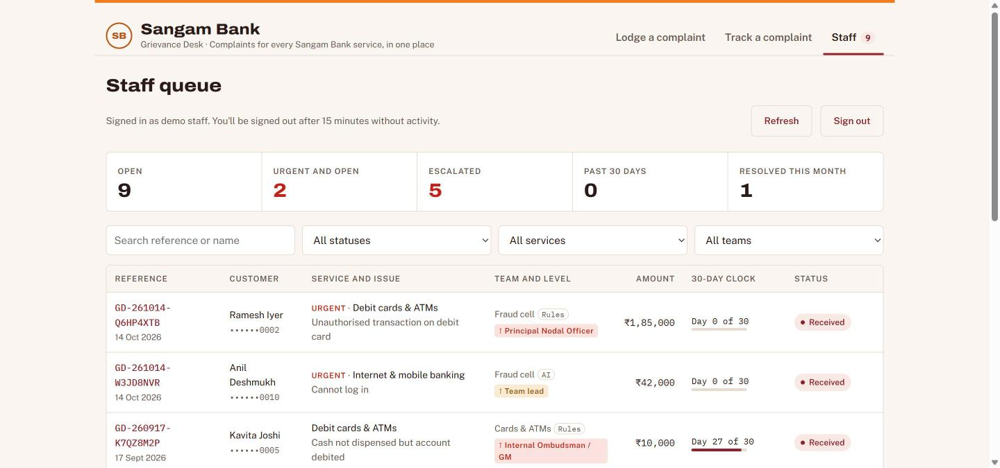
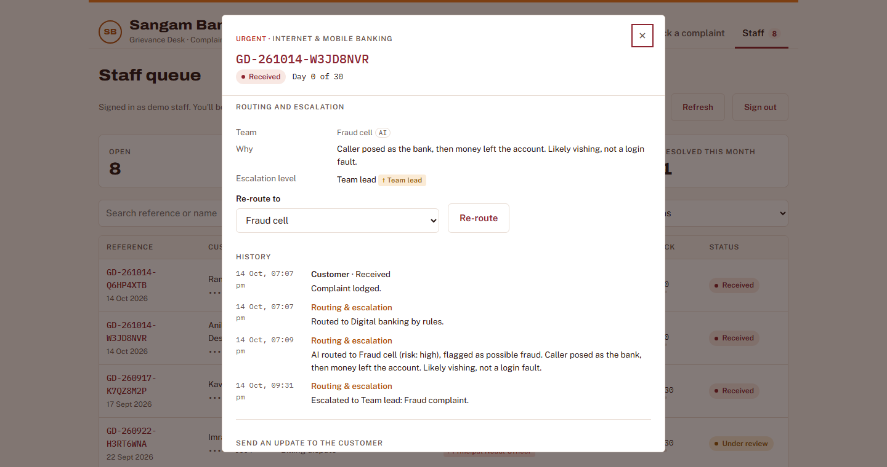

| Course | Product Management with AI, IIM Calcutta (Prof. Saravana Jaikumar) |
| Assignment | Mini Project 3: Product Marketing Strategy for Your AI-Powered Prototype |
| Prototype | Mini Project 2: “Sangam Bank Grievance Desk”, built with AI-assisted development on Supabase (Postgres, Mumbai region) and GitHub Pages. Live demo: https://connect2soniasuresh-ui.github.io/MyComplaintsSystem/ |
| Capstone group | Group 5 |
| Team members | Sonia, Chetana, Abhay, Gayatri, Padma Priya, Amir, Urmila |
| Submission date | 15 October 2026 |
Grievance Desk is a white-label complaints website and staff console for banks. A customer lodges a complaint about any banking service, gets a reference number straight away, and tracks it. The bank's complaints officers work one shared queue in which every case shows a 30-day clock, matching the RBI rule that a bank must give its final reply within 30 days before the customer can go to the RBI Ombudsman. Our prototype runs as “Sangam Bank”, a fictional demo bank. Each customer bank gets its own branded instance.
What sets it apart is security and trust by design. The form refuses OTPs, CVVs, PINs, full card numbers, Aadhaar and PAN, checking once in the browser and again in the database. Fraud complaints are flagged urgent automatically and the customer is told to block their card. Staff see contact details masked, and every reveal is logged. Data is stored in India. On top of this sit two AI features. The AI Complaint Assistant lets a customer simply describe the problem in a chat and turns that into a complete complaint. AI routing and escalation sends each complaint to the right team and escalates it automatically before Day 30.
The beachhead is India's urban cooperative banks (UCBs), small finance banks (SFBs) and regional rural banks (RRBs). They face the same RBI grievance expectations as large banks, but have small IT teams, no enterprise CRM, and often run complaints on paper registers, email and Excel.
GTM motion: account-based, founder-led sales through cooperative-bank federations, core-banking vendors and compliance consultants, backed by a 60-day pilot. Business model: annual SaaS subscription by bank size, plus a one-time setup fee. Launch: week of 18 January 2027, with 3 pilot banks live and 2 paying banks by 31 March 2027.
| Capability | What it does (as built) | Who benefits |
|---|---|---|
| Guided 4-step complaint form | Covers 12 banking services (accounts, debit cards and ATMs, credit cards, UPI/NEFT/IMPS/RTGS, internet and mobile banking, loans, deposits, cheques, branch service, insurance and investments, lockers, KYC) and about 50 specific issue types. Captures transaction date, amount, UTR/RRN and the outcome the customer wants. Works on mobile. | Customer |
| Instant reference number | Reference numbers like GD-261004-K7QZ8M2P have 8 random characters so they can't be guessed. The receipt shows the timeline: Day 0 reference, Day 1–7 review, Day 30 final reply, then the RBI Ombudsman route. | Customer |
| Track and reply | Customers prove it's theirs with reference number plus registered mobile. Tracking locks for an hour after 5 wrong attempts. When the bank asks for more information (status “Waiting for you”), the customer replies on the same page. | Customer, call centre |
| Fraud triage | Unauthorised transactions, money sent to the wrong account and phishing are flagged urgent automatically and moved to the top of the queue. The customer is told to block the card first and report within 3 working days (RBI's zero-liability window). | Customer, bank risk team |
| Confidential-data guard | Blocks OTP, CVV, PIN, passwords, full card numbers (Luhn-checked), Aadhaar, PAN and full account numbers, in the browser and again in the database. Staff messages that ask for these are blocked too, which stops phishing-style requests. No file uploads. | Customer, Compliance, CISO |
| Staff queue and 30-day clock | Shared queue with tiles for Open, Urgent and open, Escalated, Past 30 days, and Resolved this month. Each case shows a progress bar (“Day 12 of 30”, “3 days past 30”). Search by reference or name, filter by status, service and team. Each row shows the case's team and escalation level. Urgent, escalated and oldest cases first. | Complaints officers, Head of grievance |
| Audit trail and privacy controls | Every status change and message is timestamped with the officer's identity. Staff see mobile and email masked; revealing them is a deliberate click logged with who and when. Staff sign-in only by invitation, with sign-out after 15 minutes of inactivity. | Compliance, Internal audit |
| Built-in RBI transparency | After 30 days, or when the bank closes a complaint the customer disagrees with, the tracker shows the RBI Ombudsman escalation route (cms.rbi.org.in, 14448). | Customer, Compliance |
| India data residency, low running cost | Static website plus hosted Postgres in the Mumbai region, with row-level security and no direct table access. Running costs are very low, and there's a demo mode for sales demos. | CTO, CFO |
| AI Complaint Assistant (Section 1.3) | “Describe it in a chat” on the Lodge tab. The AI asks follow-up questions and fills in the form; the customer checks it, adds name and mobile, and submits. | Customer |
| AI routing and auto-escalation (Section 1.3) | Rules route every complaint to one of nine teams the moment it's lodged; AI then re-routes it once, rates its risk and flags hidden fraud. An escalation matrix raises cases to Team lead, Principal Nodal Officer or Internal Ombudsman / GM. Staff can re-route; every step is logged with its reason and hidden from the customer. | Complaints officers, Nodal officer, Compliance |
Built with AI: the prototype was designed and coded with an AI coding assistant on Supabase (hosted Postgres) and GitHub Pages. That's why a small team could build a production-grade, security-hardened app in weeks, and that speed is part of our cost advantage. AI in the product comes from two features, both built into the prototype. They run in a server-side function that calls Claude (Anthropic), so the API key never reaches the browser. Live demo: https://connect2soniasuresh-ui.github.io/MyComplaintsSystem/
| AI feature | What it does | Why it matters |
|---|---|---|
| Built 1. AI Complaint Assistant (chatbot) | The customer types the problem in their own words, for example “I paid ₹2,500 by UPI on 2 Oct, money left my account but the shop didn't get it”. The assistant identifies the service and issue (UPI, debit-but-not-credited), pulls out the date, amount and UTR, asks only for what's missing, and shows a summary. One click fills in the complaint form; the customer checks it, adds their name and mobile, and submits it to get a reference number. It replies in the customer's language (English, Hindi or another Indian language) and fills in the form in English. Every message goes through the existing confidential-data guard, so if the customer types an OTP or PIN the assistant refuses it and explains why. It will never ask for one. | Removes the hardest part of complaining (choosing among 12 services and about 50 issues), so customers drop off less and complaints are complete. This matters for rural and less tech-savvy customers. |
| Built 2. AI routing and auto-escalation | Routing: AI reads each complaint and sends it to one of nine teams (Cards & ATMs, Payments & UPI, Digital banking, Loans & recovery, Accounts & deposits, Branch operations, Insurance & investments, KYC & records, Fraud cell), using the service, the issue, the amount and the wording, and rates its risk as low, medium or high. It also catches likely fraud the customer filed under the wrong category. Escalation: a rule-based matrix, informed by the AI risk rating, escalates cases automatically. A fraud case, or one the AI rates high risk, goes to the team lead straight away, and fraud of ₹1 lakh or more goes to the Principal Nodal Officer. A case with no action for 7 days goes to the team lead. A case at Day 20 without a resolution goes to the nodal officer. Day 25 goes to the Internal Ombudsman or GM. A customer's third complaint in 90 days goes to the Principal Nodal Officer. Levels never go down. Every routing and escalation is logged in the case history with the reason. | Complaints reach the right officer on day 1, not day 5. Breaches of the 30-day limit are prevented before they happen, and the escalation chain RBI expects is followed automatically and recorded. |
Safeguards (as built): the chatbot never sees the customer's name, mobile or email, because the customer types those into the form; messages containing an OTP, PIN, CVV, card, Aadhaar or PAN number are blocked before they reach the model; the AI routes each complaint only once and staff can re-route; rule-based routing and fraud flags apply even if the AI is unavailable; each user is rate-limited; every AI decision is recorded in the audit trail. Later roadmap: a weekly AI insight brief for the board and AI-drafted replies for officers.
Source: RBI, Annual Report of the Ombudsman Schemes 2023-24 (figures rounded).
| Pain today | Consequence | How Grievance Desk fixes it |
|---|---|---|
| Complaints come in on paper registers at branches, a shared mailbox, phone calls and walk-ins | No single list. Cases get lost and nobody knows how many are open. | One online form and one shared queue |
| No running clock | Banks find out about breaches only after the customer escalates to RBI | A Day X of 30 meter on every case and a Past 30 days tile |
| Customers email OTPs, card numbers and Aadhaar copies | Data-protection risk and a target for fraudsters | Confidential-data guard, no uploads |
| “Where is my complaint?” calls | Branch and call-centre time wasted, angry customers | Self-service tracking with reference number and mobile |
| No audit trail at inspection time | Days spent rebuilding history from emails and registers | Timestamped history and access logs |
| Fraud complaints wait in the same queue as cheque-book requests | Customers lose the zero-liability window. Losses and anger grow. | Automatic urgent flag and block-first guidance |
| Layer | Definition | Estimate |
|---|---|---|
| TAM | All RBI-regulated banks and lenders with a customer grievance function: commercial banks, SFBs, payments banks, RRBs, UCBs, state and district cooperative banks, NBFCs | ~12,000 entities |
| SAM | Smaller banks with no enterprise CRM: ~1,450 UCBs, ~11 SFBs, ~28 RRBs (after the 2025 amalgamation), ~6 payments banks, plus ~350 state and district cooperative banks | ~1,850 banks × average ₹3.5 lakh ACV ≈ ₹65 Cr/yr |
| SOM (3 years) | Reachable through federations and core-banking vendor partners | 100 to 150 banks ≈ ₹4 to 5 Cr ARR |
Bank counts are approximate and should be checked against current RBI data. NBFCs (~9,000) are an adjacent segment for Year 2.
| Segment | Pain | Ability to pay | Sales cycle | Fit with prototype | Decision |
|---|---|---|---|---|---|
| Large public and private banks | High | High | 12–18 months | Low (in-house CRM) | Not targeted |
| Urban cooperative banks (Tier 2–4) | Very high (tight supervision, tiny IT teams, paper registers) | Low–medium | 2–4 months, board approval | Very high (lockers, cheques, deposits, branch service all covered) | Beachhead |
| Small finance banks and RRBs | High (fast-growing digital volume, rural customers) | Medium | 3–6 months | High | Beachhead (second wave) |
| Payments banks, fintechs | High volume of UPI complaints | Medium–high | 1–3 months | Medium (fewer services) | Opportunistic |
| NBFCs and digital lenders | High | Medium | 2–4 months | Medium (loan-focused service list) | Year 2 |
Rajesh Kulkarni, 46, Principal Nodal Officer and Head of Customer Service
A Tier-3 urban cooperative bank in Pune with 28 branches, 3.5 lakh customers, about 40 complaints a day and 4 people handling them.
Background: joined as a clerk 22 years ago and rose through branch operations. Comfortable with the core-banking system and Excel, cautious with new tech. Named as nodal officer on the bank's website, so RBI escalations land on his desk personally. Reports to the CEO and presents to the board's Customer Service Committee every quarter.
A typical day: collects complaint registers scanned by branches, reads the complaints mailbox, phones branch managers for updates, keeps a master Excel sheet, and once a month works late putting the board report together.
Goals
Frustrations
Buying criteria: simple enough for branch staff, data in India, nothing to install, cost a board will approve, recommended by peers or the federation.
Where he gets information: his state UCB federation and the national federation (NAFCUB), RBI circulars, WhatsApp groups of cooperative-bank officers, the Banking Frontiers and cooperative-sector press, his core-banking vendor's user meets, statutory and concurrent auditors, and annual sector conferences.
| Role | Cares about | What wins them |
|---|---|---|
| CEO / General Manager (economic buyer) | RBI standing, reputation, cost, board optics | Past-30-days tile at zero, Escalated tile and escalation log, peer references, low annual fee |
| Board Customer Service Committee | Oversight, fewer escalations | Quarterly trend report; automatic escalation log showing every case escalated before Day 30 |
| Compliance officer / Internal auditor | Evidence, data protection, DPDP | Audit trail, contact-access log, confidential-data guard, consent capture |
| IT head / core-banking vendor | No integration work, security | Hosted, nothing to install, India region, row-level security, CSP, staff by invitation only |
| Complaints officers (daily users) | Simplicity, not being blamed | One queue, urgent and oldest first, history in one place |
| Bank customers (end users) | Being heard, safety, knowing the status | 2-minute form, instant reference number, tracking, clear Ombudsman rights |
“Every complaint answered within 30 days. Customers' secrets never stored. Live in under two weeks.”
Grievance Desk gives smaller banks a branded, secure complaints website and staff queue built around RBI's 30-day rule. Customers get a reference number at once and can track their complaint. Fraud cases go to the top of the queue, confidential details are blocked before they are stored, and every staff action is logged. An AI Complaint Assistant lets customers complain just by chatting, and AI routing sends every case to the right team and escalates it automatically well before Day 30.
| Customer jobs | Pains | Gains wanted |
|---|---|---|
| Record every complaint; reply within 30 days; protect customer data; report to the board and RBI; spot fraud fast | Paper and email; breaches discovered late; OTP and Aadhaar arriving in inboxes; no audit trail; slow IT vendors; personal accountability | Zero Ombudsman escalations; a clean inspection; fewer follow-up calls; a modern image; quick launch at low cost |
| Products and services | Pain relievers | Gain creators |
| 12-service guided form; reference number and tracking; staff queue with 30-day meter; fraud auto-flag; confidential-data guard; audit and access logs; Built AI Complaint Assistant (chatbot), AI routing and auto-escalation | One queue; Past 30 days alarm tile; secrets refused in the browser and the database; masked contacts; timestamped history; nothing to install | Customers check status themselves; Ombudsman rights shown openly (builds trust); every AI routing decision comes with a plain-language reason; branded for the bank |
| Alternative | Strengths | Gaps for our persona |
|---|---|---|
| Paper register + email + Excel (status quo) | Free, familiar | No clock, no tracking, no audit trail, secrets end up in inboxes |
| Complaint module from the core-banking vendor | Already a supplier | Usually an internal-only form, no customer tracking, few privacy controls, slow change requests |
| Generic helpdesk (e.g. Freshdesk, Zoho Desk) | Cheap, mature | Not built for banking: no 30-day RBI clock, no Ombudsman flow, accepts any attachment or text including OTPs and Aadhaar, needs configuration skills |
| Enterprise CX suites (e.g. Salesforce, Sprinklr) | Powerful | Priced and scoped for large banks, long implementation projects |
| RBI CMS portal | Free, official | It's where escalations end up, which is exactly what banks want to avoid. It doesn't replace the bank's own desk. |
| Generic / low banking fit | Built for Indian banking compliance | |
|---|---|---|
| Fast, affordable, nothing to install | Excel, email, generic helpdesks | Grievance Desk (open space we target) |
| Slow, expensive, IT-heavy | Horizontal CRM | Enterprise CX suites, core-banking add-ons |
| Point of difference | Reason to believe (in the prototype today) |
|---|---|
| Built around RBI's 30-day rule | A Day X of 30 meter on every case, a Past 30 days alarm tile, the customer receipt timeline, and the Ombudsman route shown after Day 30 |
| Safe by design | Confidential details blocked in the browser and again in the database; staff requests for secrets blocked; no uploads; only the last 4 digits of account and card numbers collected |
| Fraud first | Fraud issue types flagged urgent automatically and shown first; block-first and 3-day zero-liability guidance shown to the customer |
| Ready for audit | Timestamped event history per case; every reveal of a customer's contact details logged; staff accounts by invitation only, with 15-minute idle sign-out |
| Data stays in India and it's cheap to run | Mumbai-region database, static hosting, about ₹2–5k/month infrastructure per bank, so we can price for cooperative banks |
| Speed | A working, security-hardened prototype was built quickly with AI-assisted development. Launching a new bank means branding plus adding staff accounts. |
Product gaps to close for launch (presented as roadmap, never claimed today): SMS and email notifications; MIS/CSV export; Hindi and regional-language forms; CAPTCHA; MFA for staff; a published retention policy.
| Pillar 1: Never miss Day 30 | Pillar 2: Safe by design | Pillar 3: AI does the legwork |
|---|---|---|
| Every complaint gets a reference number and a visible 30-day clock. Fraud goes first. Nothing slips through. | OTPs, PINs, CVVs, card numbers, Aadhaar and PAN are refused before they are stored. Every look at customer data is logged. | Customers complain just by chatting. AI routes each case to the right officer and escalates it before Day 30. No case sits forgotten. |
| Proof: 30-day meter, Past 30 days tile, urgent-first queue | Proof: two-layer confidential-data guard, masked contacts, access log, India hosting | Proof: Built the chatbot turns a few sentences into a filled-in complaint form; every routing and escalation is logged with its reason |
| Audience | Key message | Call to action |
|---|---|---|
| Nodal officer (Rajesh) | “Stop finding out about late complaints from RBI. See Day 30 coming, for every case, on one screen.” | Watch the 3-minute demo; book a live demo with your branch list |
| CEO / GM | “A modern, branded complaints desk for less than the cost of one clerk, live before your next board meeting.” | Ask for the 60-day pilot |
| Compliance / Auditor | “Every action is timestamped, every look at customer contact details is logged, and confidential details are blocked by the database itself.” | Download the RBI and DPDP readiness checklist |
| IT head / core-banking vendor | “Nothing to install or integrate. A link on your website, data in Mumbai, and access rules enforced in the database.” | Request the security note |
| Complaints officers | “One queue, urgent and oldest first, the full story of each case in one place. No more registers.” | Try the demo-mode sandbox |
| Bank customers (bank-led message) | “Raise a complaint in 2 minutes, get a reference number instantly, and track it any time. We will never ask for your PIN or OTP.” | “Lodge a complaint” button on the bank's website, passbook stickers, branch posters, SMS |
“RBI gives every bank 30 days to answer a complaint before the customer can go to the Ombudsman. Most cooperative and small banks still track complaints in paper registers and email, so they find out a case is late only when RBI forwards it, and their inboxes fill up with customers' OTPs and Aadhaar numbers. Grievance Desk gives them a branded online complaints desk. Customers get a reference number and live tracking, every case runs on a 30-day clock, fraud goes first, and confidential details are blocked before they are ever stored. Customers can simply chat with an AI assistant that fills in the form for them, and AI routes every case to the right team and escalates it before Day 30. It goes live in under two weeks, with nothing to install.”
B2B white-label SaaS, annual subscription paid by the bank, priced by bank size (number of branches) with a generous complaint allowance, plus a one-time setup fee. End customers never pay.
Why price by branches: cooperative-bank boards understand and budget by branch count. It is stable and predictable, which avoids the bank worrying that “more complaints means a bigger bill”. It also tracks value, since more branches mean more complaints and more regulatory exposure. Per-user pricing would discourage banks from giving every officer and branch manager access.
| Tier | Essential | Professional (target tier) | Enterprise |
|---|---|---|---|
| Best for | Small UCBs, up to 10 branches | UCBs and RRBs with 11–60 branches | SFBs, larger UCBs, multi-state banks |
| Price | ₹12,000 / month (₹1.44 lakh / yr) | ₹30,000 / month (₹3.6 lakh / yr) | From ₹9 lakh / yr |
| Complaints included | 1,000 / month | 5,000 / month | Unlimited |
| Staff accounts | 5 | 25 | Unlimited |
| Included today | Branded complaints website, reference numbers and tracking, 12-service form, staff queue with 30-day clock, fraud auto-flag, confidential-data guard, audit and access logs, India hosting | ||
| Tier extras | Email support | + AI Complaint Assistant (chatbot), AI routing and auto-escalation, SMS/email notifications, MIS export | + Custom escalation matrix (Internal Ombudsman, GM), board-report pack, weekly AI insight brief, custom domain, SSO and MFA, regional languages, dedicated success manager |
Other revenue: setup fee of ₹25,000 (Essential) to ₹1.5 lakh (Enterprise) covering branding, staff onboarding, branch-staff training and customer-launch collateral. Add-ons such as WhatsApp intake, extra languages or an IVR callback at ₹3,000–8,000 a month each.
Launch offers: (1) 60-day free pilot for the first 5 banks in exchange for a testimonial and reference calls; (2) Founding-bank price, 25% off year 1 for contracts signed by 31 March 2027; (3) Federation member rate, 10% off for members of partner UCB federations.
| Metric | Target | Rationale |
|---|---|---|
| Average contract value (ACV) | ₹3–4 lakh | Mostly Professional tier |
| Gross margin | ~80% | Very low hosting cost; AI cost under ₹1 per complaint |
| CAC | ≤ ₹1.2 lakh | Federation and vendor channels, founder-led sales |
| CAC payback | ≤ 6 months | Annual billing in advance |
| Logo churn | < 8% / yr | Becomes part of the bank's grievance policy and customer communications |
| LTV : CAC | ≥ 6 : 1 | Low churn and tier upgrades |
Partner-assisted, account-based, founder-led sales. Cooperative banks rely on trusted intermediaries such as federations, core-banking vendors and auditors, so these are our main routes in. A free pilot removes the risk of buying, and pilot banks become the references that persuade the next ones.
| Channel | Key activities | Purpose | KPI (to Mar 2027) |
|---|---|---|---|
| UCB federations (primary) | Approach state federations (start with Maharashtra and Gujarat, which have the most UCBs) and the national federation (NAFCUB). Offer a member rate and a free “30-day rule and DPDP” workshop for member banks. | Trust, reach | 2 federation partnerships; 4 workshops |
| Core-banking and IT vendor partners | Referral and reseller deals with the software vendors that serve cooperative banks. Grievance Desk is a no-integration add-on they can offer. 20% revenue share. | Distribution | 3 partners; 25% of pipeline |
| Auditors and compliance consultants | Concurrent and statutory audit firms that flag weak grievance processes. Referral fee of 15% of year-1 ACV. | Warm referrals | 5 active referrers |
| Account-based outreach | List of 200 target banks from RBI lists, with nodal officers' names taken from each bank's website (they're required to publish them). Personalised email, LinkedIn and phone outreach, with a 3-minute demo video showing the OTP refusal and the 30-day meter. | Pipeline | 40 demos |
| Content and lead magnets | (1) “RBI 30-Day Rule and DPDP Readiness Checklist for Cooperative Banks”; (2) “What Customers Complain About: Insights from RBI Ombudsman Data”; (3) a free self-assessment: “Would your complaints desk pass an inspection?” | Lead generation | 250 downloads; 60 qualified leads |
| Webinars and workshops | Monthly session with a guest (retired RBI or cooperative-bank official, or a DPDP lawyer), plus a live demo. Run in English and Marathi or Hindi. | Education | 80 attendees per session |
| Events | Booth or speaking slot at cooperative-banking conferences and federation AGMs, and Global Fintech Fest for SFBs and payments banks. Closed-door breakfasts for nodal officers in Pune, Ahmedabad and Bengaluru. | Relationships | 30 qualified conversations per event |
| LinkedIn and WhatsApp | Founder posts twice a week (“complaint of the week” teardowns, RBI rule explainers). Shareable 60-second demo clips designed to be forwarded in bankers' WhatsApp groups. | Awareness | 150k impressions |
| PR and website | Launch story and pilot case study in banking and fintech media. Website with a demo-mode sandbox (already built), segment pages, pricing and security page. SEO for searches such as “complaint management system for cooperative bank” and “RBI 30 day complaint rule”. | Credibility, inbound | 4 media mentions; 1,500 visits/month |
| Bank-to-customer launch kit (for each customer bank) | Branch posters with QR codes, passbook inserts, SMS template, website banner and a “we never ask for your OTP” message, so the bank's own customers actually use the desk. | Adoption | ≥ 60% of a pilot bank's complaints coming in online |
| Stage | Activity | Exit criteria |
|---|---|---|
| 1. Discovery (30 min) | Ask about current complaint channels, monthly volumes, recent RBI escalations, inspection findings and who signs off. | Pain confirmed; CEO's interest |
| 2. Demo with the bank's own brand | A demo-mode instance branded with the bank's name and branches. Live OTP-refusal and fraud-flag moments. | Nodal officer wants a pilot |
| 3. Security and compliance pack | Security note (row-level security, CSP, India region, access logs), data processing agreement, DPDP mapping. | IT and compliance sign-off |
| 4. 60-day pilot | 3 to 5 branches plus the head office desk. Success criteria agreed upfront (zero cases past 30 days, share of complaints lodged online, officer time saved). | Criteria met |
| 5. Board approval and contract | ROI one-pager and board note template written for the bank's board. | Board resolution, signed order |
| 6. Roll out and expand | All branches go live with the customer launch kit. Quarterly review of routing accuracy and the escalation log. | All branches live in under 30 days; NPS ≥ 40 |
| Phase | Dates | Goal | Key activities |
|---|---|---|---|
| 0. Validate | 15 Oct to 8 Nov 2026 | Confirm persona, value and price | 15 to 20 interviews with nodal officers and CEOs at UCBs, SFBs and RRBs; demo the live prototype; pricing survey; first conversations with federations |
| 1. Pilot build and design partners | 9 Nov to 20 Dec 2026 | Launch-ready product, 3 pilot banks | Tune the AI Complaint Assistant and AI routing on pilot data; build SMS/email notifications, MIS export, CAPTCHA and staff MFA; sign 3 pilot banks; set up branded instances |
| 2. Pilots and pre-launch | 21 Dec 2026 to 15 Jan 2027 | Proof and assets | Pilots live with the customer launch kit; collect metrics; build website, demo video, checklist, sales deck, ROI one-pager and security pack; sign federation and vendor partners |
| 3. Public launch | Week of 18 Jan 2027 | Awareness and pipeline | Launch webinar co-hosted with a federation and a pilot-bank speaker; press release; founder launch post; ABM blitz to 200 banks; founding-bank offer opens |
| 4. Convert and scale | Feb to Mar 2027 | First revenue | Convert pilots to paid; federation workshops; first conference; 2 case studies; review the funnel and refine pricing and target segment |
Owners are listed by role. Assign team members to roles: PM = Product Manager / team lead, PMM = Product Marketing Manager, GTM = Sales and Partnerships lead, TECH = Engineering lead (prototype codebase), CX = Customer Success and Compliance lead.
| Week / dates | Activities | Owner | Milestone |
|---|---|---|---|
| W1 · 15 to 18 Oct | Submit strategy; assign roles; build a list of 200 target banks; interview guide; load test complaints and share the live demo link | PM, GTM, TECH | Target list v1; demo link shared |
| W2–3 · 19 Oct to 1 Nov | 15 to 20 interviews with nodal officers and CEOs; prototype demos; pricing survey; first federation meetings | PM, CX, GTM | Interview synthesis; persona v2 |
| W4 · 2 to 8 Nov | Finalise positioning, messaging and pricing; spec the pilot additions (SMS/email notifications, MIS export, CAPTCHA, staff MFA, Hindi and Marathi chat, per-bank escalation matrix) | PMM, PM | M1: Messaging, pricing and pilot spec locked |
| W5–6 · 9 to 22 Nov | Add Hindi and Marathi to the AI Complaint Assistant; build notifications; sign 3 pilot banks (MoU, NDA, data processing agreement); draft security and DPDP pack | TECH, GTM, CX | M2: 3 pilot banks signed |
| W7–8 · 23 Nov to 6 Dec | Configure each bank's routing teams and escalation matrix; build MIS export; set up branded instances; train pilot staff; print customer launch kits | TECH, CX, PMM | Pilot instances ready |
| W9–10 · 7 to 20 Dec | Pilots go live; record baseline (complaints past 30 days, channels used); weekly check-ins; fix issues | CX, TECH, PM | M3: Pilots live |
| W11–12 · 21 Dec to 3 Jan | Website with sandbox; 3-minute demo video; checklist; sales deck; ROI one-pager; sign vendor and auditor partners | PMM, GTM | Launch assets v1; 2 partners signed |
| W13–14 · 4 to 17 Jan | Mid-pilot review; capture testimonials; teaser campaign; webinar registrations; press kit; go/no-go review | PM, PMM, CX | M4: Launch readiness (go/no-go) |
| W15 · 18 to 24 Jan | PUBLIC LAUNCH: federation co-hosted webinar, press release, founder post, ABM blitz to 200 banks, founding-bank offer | All | M5: Launch (150+ registrants; 20 demo requests) |
| W16–19 · 25 Jan to 21 Feb | Pilots end (60 days); convert to paid; 20+ demos; case study #1; first federation workshop | GTM, CX, PMM | M6: First paying bank |
| W20–24 · 22 Feb to 31 Mar | Conference or roundtable; case study #2; partner-sourced deals; funnel review; refine pricing and target segment; plan next quarter | All | M7: 2+ paying banks, ₹6 lakh+ contracted ARR, 20-bank pipeline |
| Workstream | Oct | Nov | Dec | Jan | Feb | Mar |
|---|---|---|---|---|---|---|
| Customer discovery | ■■■ | ■ | ||||
| Positioning, messaging, pricing | ■ | ■■ | ■ refine | ■ refine | ||
| Pilot build (notifications, MIS export, AI tuning) | ■■■ | ■■ | ||||
| Pilot banks | sign | ■■■ | ■■■ | convert | ||
| Partners (federations, vendors, auditors) | ■ | ■■ | ■■ | ■■ | ■■ | ■■ |
| Content and launch assets | ■ | ■■■ | ■■ | ■ | ■ | |
| Public launch | ★ 18 Jan | |||||
| Sales and ABM | ■ | ■■ | ■ | ■■■ | ■■■ | ■■■ |
| Deliverable | PM | PMM | GTM | TECH | CX |
|---|---|---|---|---|---|
| Persona and messaging | A | R | C | I | C |
| Pricing and packaging | A/R | C | C | C | I |
| Pilot build (notifications, MIS export, MFA, AI tuning) | A | I | I | R | C |
| Pilot banks and onboarding | C | I | A | C | R |
| Security, DPDP and RBI compliance pack | A | I | C | R | R |
| Website, content and launch campaign | C | A/R | C | C | I |
| Federation and vendor partnerships | C | C | A/R | I | I |
R = Responsible, A = Accountable, C = Consulted, I = Informed
| Stage | Metric | Target |
|---|---|---|
| Awareness | LinkedIn impressions; website visits; webinar and workshop attendees | 150k; 4,000; 300 |
| Acquisition | Qualified leads; demos held | 60; 40 |
| Activation | Pilots started; pilot-to-paid conversion | 5; ≥ 50% |
| Revenue | Paying banks; contracted ARR | 2+; ₹6 lakh+ |
| Product value (pilot banks) | Open complaints past 30 days; share lodged online; “where is my complaint” calls; confidential details blocked | 0; ≥ 60%; −40%; 100% (tracked per bank) |
| Adoption and advocacy | Weekly active officers; customer satisfaction after resolution; NPS of bank staff; referenceable banks | ≥ 80%; ≥ 4/5; ≥ 40; 2 |
| Item | Amount (₹) |
|---|---|
| Events, federation workshops and travel | 2,50,000 |
| LinkedIn ads and ABM | 1,50,000 |
| Content: demo video, website, checklist and report design | 1,25,000 |
| Customer launch kits for pilot banks (posters, inserts, translations) | 60,000 |
| Infrastructure and tools (hosting, AI API, SMS, CRM, webinar platform) | 75,000 |
| Legal review (DPDP, data processing agreement, privacy notice) | 75,000 |
| Contingency (10%) | 73,500 |
| Total | 8,08,500 |
| Risk | Impact | Mitigation |
|---|---|---|
| Cooperative banks are conservative and slow, and need board approval | High | Federation endorsement; free pilot; board-note template; peer references |
| Vendor-risk and IT outsourcing reviews | High | Security pack prepared in advance; India hosting; row-level security; data processing agreement; plan for a third-party security audit |
| Customers keep using branches and phone | Medium | Customer launch kit with QR codes; branch staff lodge complaints for walk-in customers on the same form, so every complaint is recorded |
| AI routes a case wrongly or the chatbot misunderstands a customer | Medium | Officers can re-route with one click (corrections improve the model); rule-based fraud flags and the 30-day escalation rules still apply even if the AI fails; the chatbot shows a summary for the customer to confirm, and the classic form is always available |
| Core-banking vendors build their own version | Medium | Partner with them instead (revenue share); keep a lead on privacy controls and the customer-facing experience |
| DPDP and RBI rules change | Low–medium | Compliance lead monitors circulars; rules live in the database layer so changes can be made quickly |
Screenshots of the working prototype, live at https://connect2soniasuresh-ui.github.io/MyComplaintsSystem/. Complaint data is sample data. The chat conversation and staff views were captured in the prototype's demo mode, which runs the same screens without the live database.







| What to try | How |
|---|---|
| Lodge with the AI assistant | Lodge tab → “Describe it in a chat”. Try typing an OTP to see it blocked. |
| Lodge with the form | Pick a service and issue, describe the problem, add name and mobile, submit. |
| Track a complaint | Track tab → reference number and the mobile number used when lodging. |
| Staff queue, routing and escalation | Staff tab → sign in with a staff account (available from the team on request). 12 test complaints show every routing and escalation rule. |
Prepared by Group 5 for Mini Project 3, Product Management with AI, IIM Calcutta. Market figures are indicative planning estimates and should be checked against current RBI publications.